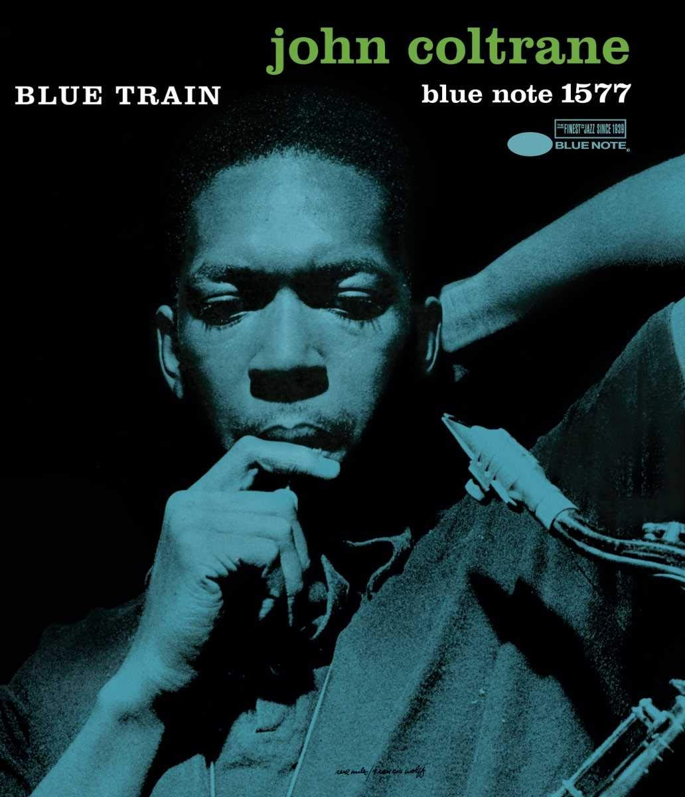

Explorando os Álbuns de John Coltrane:
Bem-vindo à seção de álbuns do nosso site dedicado ao lendário saxofonista e compositor, John Coltrane. Nesta jornada musical, convidamos você a explorar a rica e diversificada discografia de um dos mais influentes músicos do século XX. Os álbuns de John Coltrane não são apenas marcos na história do jazz, mas também testemunhos vívidos de sua evolução artística e expressão musical inovadora. Cada álbum representa uma jornada única, uma viagem emocional através de paisagens sonoras complexas e emocionantes. Ao longo de sua carreira, Coltrane mergulhou em uma ampla variedade de estilos e gêneros musicais, desde o hard bop e o modal jazz até o free jazz e a música espiritual. Seus álbuns não só refletem sua habilidade técnica excepcional como músico, mas também sua busca incessante pela expressão mais profunda e transcendental através da música. Nesta seção, convidamos você a explorar cada álbum em detalhes, os clássicos atemporais "Giant Steps" e "A Love Supreme" e "Blue Train". Cada álbum é uma peça única do quebra-cabeça que é o legado musical de John Coltrane. Prepare-se para uma jornada fascinante através dos ritmos pulsantes, das harmonias complexas e das melodias arrebatadoras que definem a genialidade de John Coltrane. Deixe-se envolver pela magia da música e pela profunda influência de um dos maiores músicos de todos os tempos.
-
Giant Steps

"Giant Steps" é um dos álbuns mais emblemáticos e influentes de John Coltrane, lançado em 1960 pela Atlantic Records. Este álbum é frequentemente considerado um marco no jazz e é amplamente reconhecido por sua complexidade harmônica e técnica virtuosa. A faixa-título, "Giant Steps", é uma das composições mais desafiadoras e inovadoras de Coltrane. A música apresenta uma progressão de acordes rápida e intrincada, que desafia até mesmo os músicos mais experientes. A abordagem única de Coltrane para a harmonia modal e suas habilidades como improvisador brilham nesta faixa, demonstrando seu domínio técnico e sua capacidade de criar melodias cativantes em meio a estruturas harmônicas complexas. Além da lendária faixa-título, o álbum inclui outras composições originais notáveis, como "Naima" e "Countdown", bem como interpretações impressionantes de standards do jazz, como "Syeeda's Song Flute" e "Mr. P.C.". "Giant Steps" também é significativo por sua formação, que inclui alguns dos músicos mais talentosos da época, como Tommy Flanagan no piano, Paul Chambers no contrabaixo e Art Taylor na bateria. A interação e o entrosamento desses músicos adicionam uma camada adicional de profundidade e riqueza à música de Coltrane. Este álbum não apenas desafiou as convenções do jazz da época, mas também influenciou gerações futuras de músicos e se tornou uma referência indispensável para qualquer estudante sério de jazz. A abordagem inovadora de Coltrane para a improvisação e sua busca incessante por novas fronteiras musicais são verdadeiramente evidentes em "Giant Steps", solidificando seu lugar como um dos álbuns mais importantes e duradouros da história do jazz.
Formação:
- John Coltrane: Saxofone Tenor
- Tommy Flanagan: Piano
- Paul Chambers: Contrabaixo
- Art Taylor: Bateria
-
A Love Supreme

"A Love Supreme" é mais do que apenas um álbum de música; é uma jornada espiritual e uma expressão transcendental da devoção de John Coltrane à divindade. Lançado em 1965 pela Impulse! Records, este álbum revolucionário mergulha profundamente nas profundezas da alma humana, explorando temas de espiritualidade, redenção e amor universal. O álbum é uma peça única e sagrada de arte, dividida em quatro partes distintas: "Acknowledgement", "Resolution", "Pursuance" e "Psalm". A faixa final, "Psalm", serve como uma oração musical, uma reverência ao divino e uma expressão de gratidão e adoração. É uma meditação musical que ecoa a busca interior de Coltrane por uma conexão espiritual mais profunda. Em "Psalm", Coltrane transcende as fronteiras do jazz convencional, guiando seus ouvintes através de um estado de contemplação e elevação espiritual. Com seu saxofone tenor como um canal de comunicação entre o terreno e o divino, Coltrane conduz uma conversa sagrada através da linguagem universal da música. A música de "Psalm" é uma tapeçaria de sons e sentimentos, evocando imagens de serenidade e paz interior. As notas ressoam com uma pureza celestial, levando os ouvintes a um estado de quietude e reflexão. É uma experiência que transcende o intelecto, mergulhando no âmago do espírito humano. Ao explorar as profundezas da espiritualidade através da música, "A Love Supreme" desafia as convenções do jazz e transcende as limitações do gênero. É uma obra-prima que continua a inspirar e ressoar com os corações daqueles que buscam significado e conexão espiritual através da arte. Formação:- John Coltrane: Saxofone Tenor
- McCoy Turner: Piano
- Jimmy Garrison: Baixo
- Elvis Jones: Bateria
-
Blue Train

"Blue Train" é um álbum icônico no mundo do jazz, lançado em 1958 pelo lendário saxofonista John Coltrane como líder de uma sessão de estúdio para a gravadora Blue Note Records. Este álbum é um testemunho da genialidade e da inovação de Coltrane, que emergia como uma das figuras mais influentes no cenário do jazz da época. O título do álbum, "Blue Train", evoca a sensação de viagem e movimento, refletindo a natureza energética e fluente da música encontrada dentro de suas faixas. Coltrane lidera um conjunto de músicos excepcionais, incluindo Lee Morgan no trompete, Curtis Fuller no trombone, Kenny Drew no piano, Paul Chambers no contrabaixo e Philly Joe Jones na bateria. Juntos, eles criam uma paisagem sonora rica e dinâmica que captura a imaginação do ouvinte desde o primeiro acorde. Uma das características mais notáveis de "Blue Train" é a composição homônima de Coltrane, uma peça de cerca de dez minutos que serve como peça central do álbum. A faixa-título apresenta um tema cativante e envolvente, destacando as habilidades de improvisação de Coltrane e de seus colegas de banda. A energia pulsante e a intensidade emocional presente nesta faixa exemplificam a mestria de Coltrane como líder de banda e como solista virtuoso. Além da faixa-título, o álbum apresenta outras composições notáveis, como "Moments Notice", "Locomotion" e "Lazy Bird". Cada faixa exibe uma variedade de estilos e influências, desde o blues até o bebop, demonstrando a versatilidade e a profundidade do talento de Coltrane como compositor e intérprete. "Blue Train" não apenas cativou os fãs de jazz de sua época, mas também deixou um legado duradouro que continua a inspirar músicos e aficionados pelo jazz até os dias de hoje. Sua combinação de composições inovadoras, improvisações virtuosas e energia contagiante o torna uma obra-prima atemporal que permanece como um dos álbuns mais emblemáticos da história do jazz.Formação:
- John Coltrane: Saxofone Tenor
- Lee Morgan: Trompete
- Curtis Fuller: Trombone
- Kenny Drew: Piano
- Paul Chambers: Contrabaixo
- Philly Joe Jones: Bateria